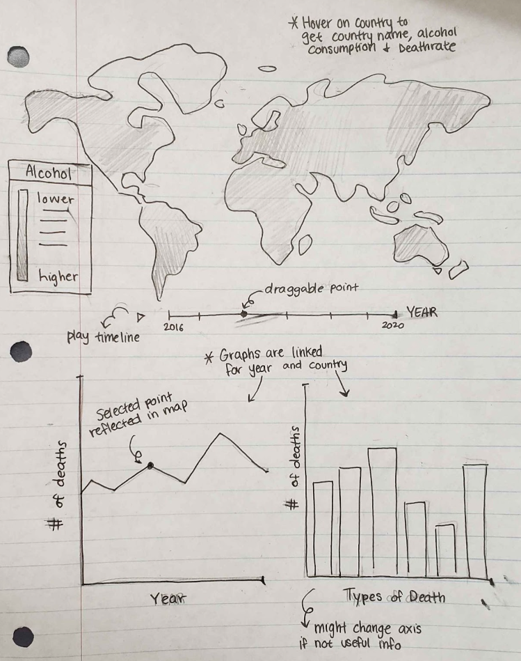
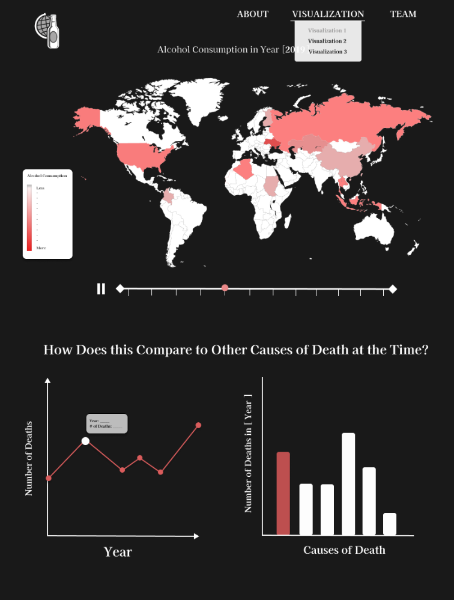
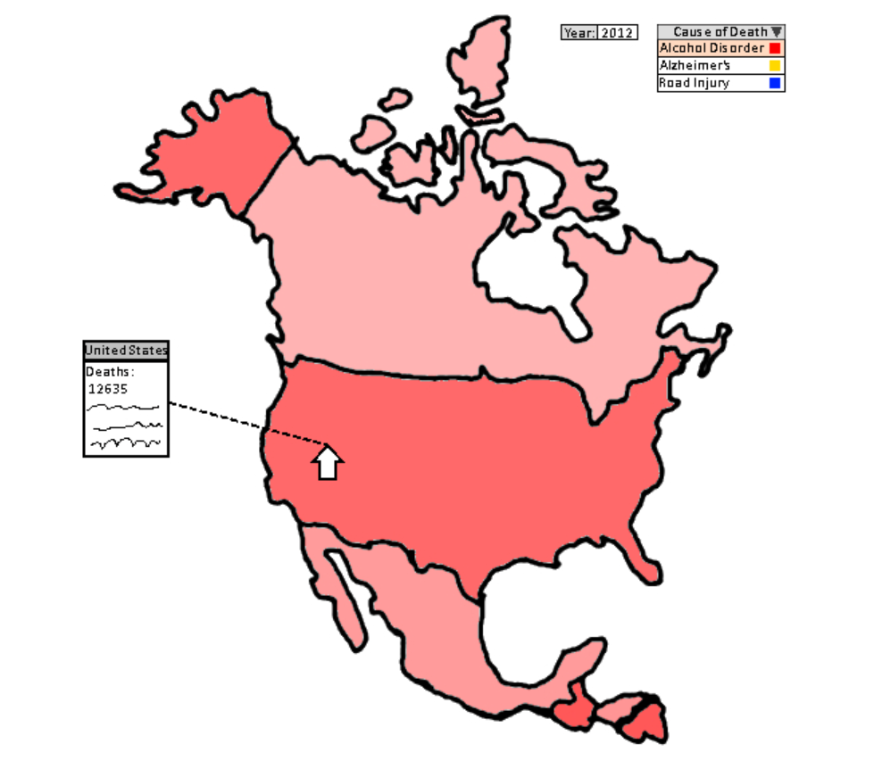
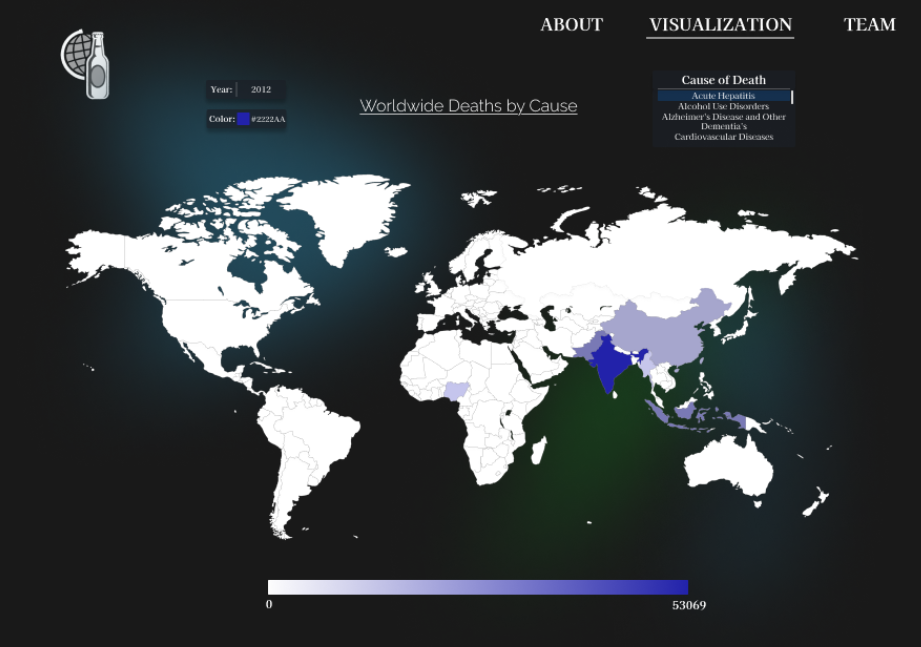
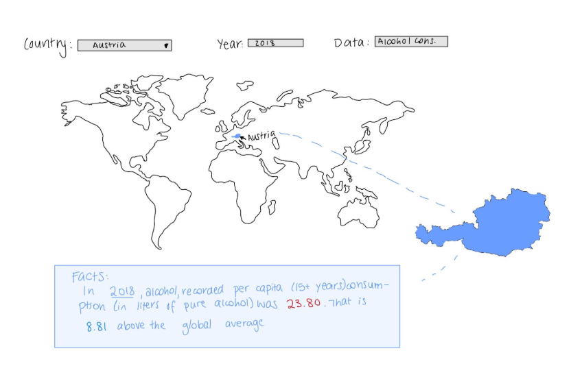
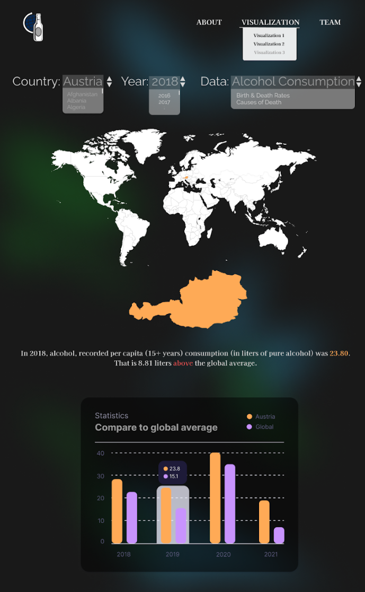

Mackenzie Chung, Debbie Engelberg, Noam Reiner, Cameron Sherman
Project-long Course Project as part of COSI 116A: Information Visualization, taught by Prof. Dylan Cashman, Brandeis University.
Alcohol consumption is a significant global health concern, often cited as a leading risk factor for numerous medical conditions and social issues. From a young age, we are taught about the dangers of excessive drinking and its potential to lead to addiction, liver disease, mental health disorders, and even premature death. Yet, the true scope of its impact on global mortality and its comparison to other leading causes of death is often less understood. This gap in understanding inspired our team to delve deeper into the correlation between alcohol consumption and death rates worldwide.
We set out to answer critical questions: How does alcohol-related mortality compare to other common causes of death? Is the narrative around alcohol consumption's dangers as dire as parents and educators suggest? Additionally, how do these risks vary across different countries and over time? To address these questions, we created a series of visualizations aimed at individuals of all backgrounds who are curious about the broader effects of alcohol consumption.
Our visualizations allow users to explore data on alcohol consumption, death rates, birth rates, and causes of death interactively. Users can observe patterns across different years and regions, enabling them to draw informed conclusions. Through this experience, we hope to provide valuable insights into the complex and often overlooked impact of alcohol on global health.
Embedded MP4 demo video using the HTML5 <video> tag. For example, this screen recording Prof. Cody Dunne made of Mike Bostock's flexible transitions in D3 slide:
There are 3 different visualizations that users can explore which are all found under the drop-down menu for "Visualizations."
Summary of data, data types, and data preprocessing.
Expectation: Data sources match the problem statement and are appropriate. These descriptions should be very explicit so someone could read your page and properly reproduce your results.
Summary of task table.
Expectation: Clearly describes domain tasks, processes, goals and abstract tasks for domain problems.
Each team member drafted 2 ideas to contribute, and as a team, we went through all our ideas and chose our top 3 visualizations. After drawing them out more precisely, we decided to incorporate all 3 options into our final project. While working on the visualizations, we've encountered a lot of difficulties with using the D3 library, but eventually figured out how to code out bits and parts of our visualizations.
Visualization 1: Brushing & Linking
 Visualization 2: Add more info later...
 Visualization 3: Add more info later...
 Short summary of work completed and areas for improvement/future-work.
Expectation: Meaningfully wraps up project and has good future directions.
List here where any code, packages/libraries, text, images, designs, etc. that you leverage come from.